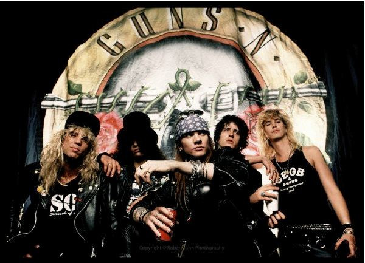
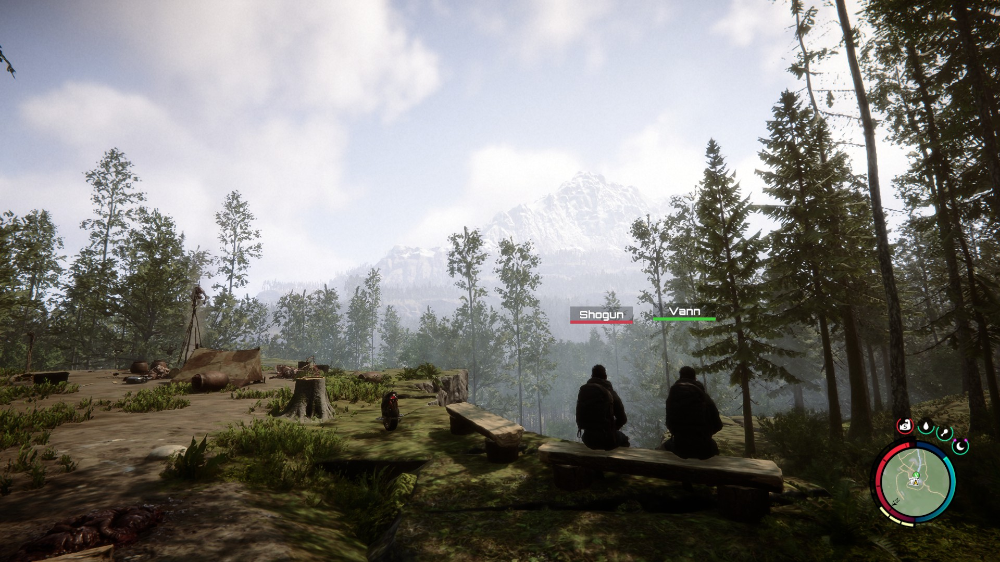

"Capturing the moments makes it matter"
Photography has been more than just a hobby for me — it's a way of seeing the world through a different lens, quite literally. What started as casual snapshots on my phone has evolved into a passionate pursuit of capturing light, emotion, and the beauty hidden in everyday moments. And now for me photography isn't just taking photos, it's about preserving moments — it's not about how good the photos are, but the story that you have behind every photo that you captured.
Around two or three years ago I was scrolling around my gallery and noticed a small icon on the edit section. Turns out it's for you to edit the image's color, the saturation, the warmth — and in photography we call it "color grading". Since then I try to find a recipe for the almost perfect color grading, and I like to capture more photos, more various than before, then color grade them.
Over the years, I've experimented with various genres — portrait, street, macro, and architectural photography. But I always find myself drawn back to landscape and urban exploration. There's something about capturing the grandeur of nature or the geometric patterns of city architecture that speaks to me.
My photographic style has evolved to embrace natural lighting and authentic moments. I've learned that the best photographs often happen when you're patient enough to wait for the perfect light, or brave enough to wake up before dawn to catch the golden hour.

The Technical Side
While creativity is crucial, understanding the technical aspects of photography has been equally important. Learning about exposure triangle — aperture, shutter speed, and ISO — opened up a whole new world of creative possibilities. I spent countless hours practicing with different settings, learning how to freeze motion, create beautiful bokeh, and capture long exposures.
Also there is some technical side such as the way you place the object in frame — there's the rule of thirds, golden ratio, leading line, and many more.
Music as Meditation
What I love most about music is how it pulls me into the present moment. When I put my headphones on, everything else fades — the noise, the rush, the endless scrolling. It becomes just me and the sound. Most days, I drift into the moody calm of Arctic Monkeys and The Weeknd. There's something about their atmosphere that feels cinematic, like walking through the city at night with your own soundtrack playing in the background.

Curated Moods
I don't just listen to music — I organize it by feeling. Each playlist I make holds a different version of me.
Drive
Loud, confident, and a little reckless. AC/DC, Don Toliver, explosive beats — for night drives that feel cinematic.
Rain
Slower, softer, more intimate. Number One Party Anthem, Wanna Be Yours — for cloudy skies and quiet thoughts.
Mine
Brighter, warmer, more open. Pop songs, timeless love tracks — for when everything feels light and hopeful.
Echoes of Home
Beyond all that, I still keep a space for Indonesian songs — especially the classics. There's something grounding about revisiting familiar melodies from bands like Dewa or Sheila On 7. They carry nostalgia, memories, and pieces of stories that feel close to home. No matter how wide my music taste goes — from rock legends to modern R&B, from late-night indie to upbeat pop — it always circles back to something personal.
🎞️ Want to see more of my photos?
Check out my photo gallery to see a collection of my favorite shots.
⭑ Maybe You're Interested?

